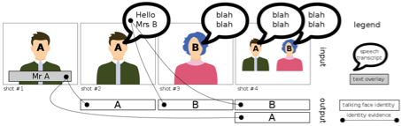
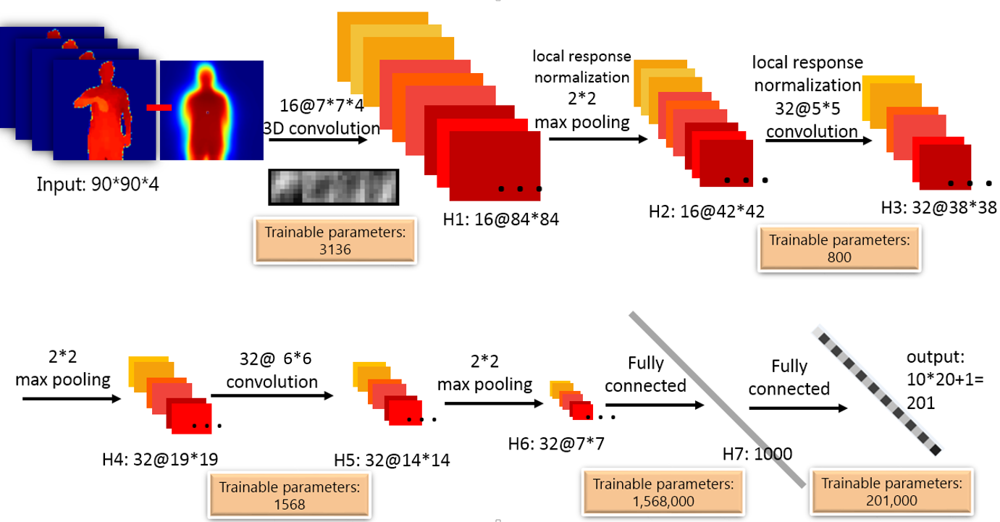
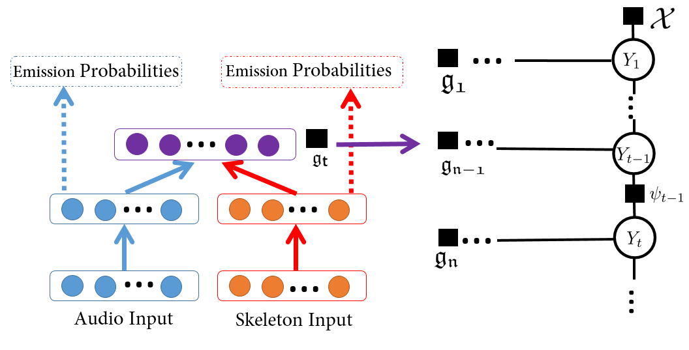
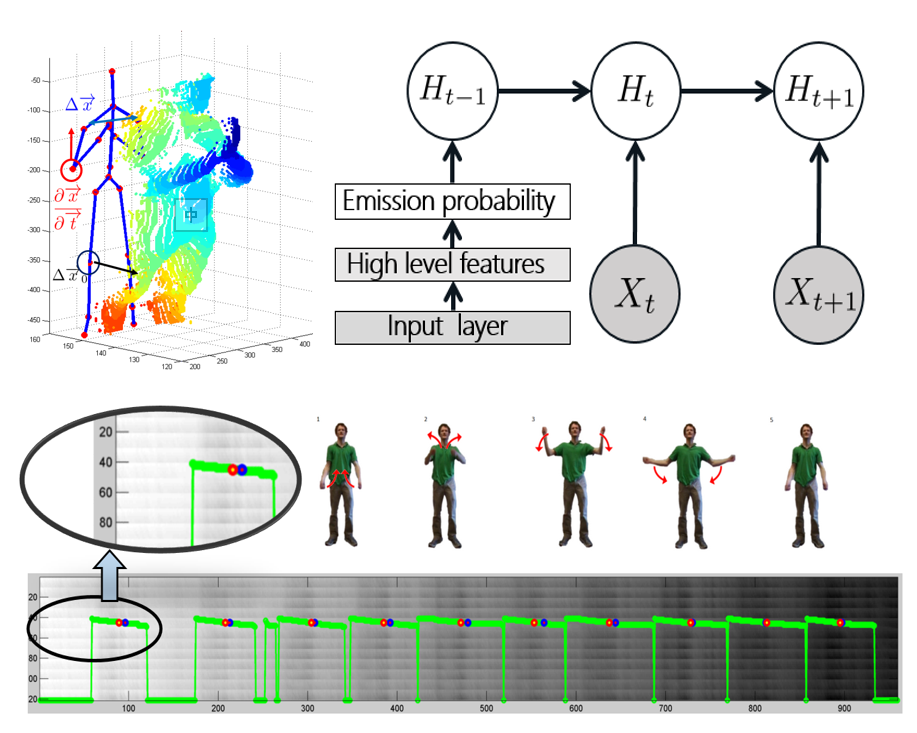
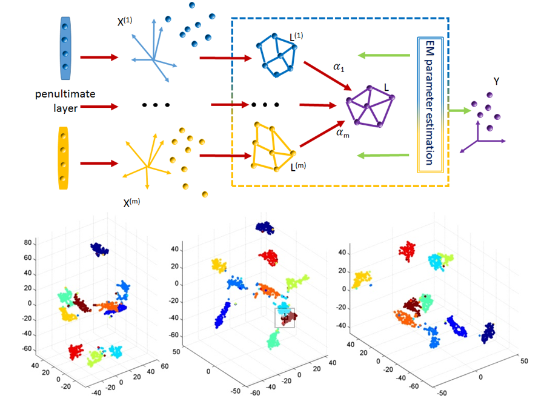
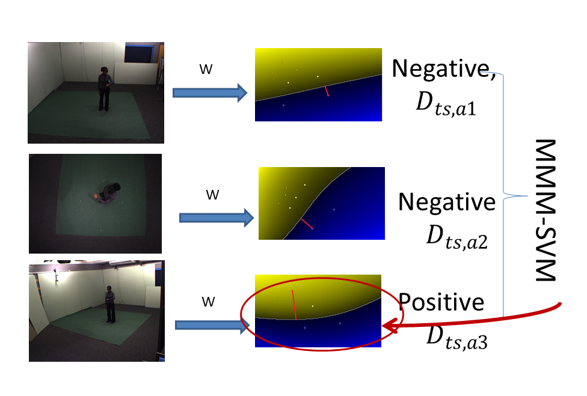
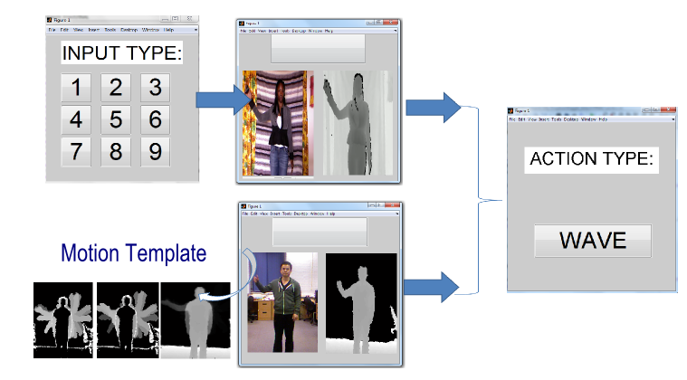
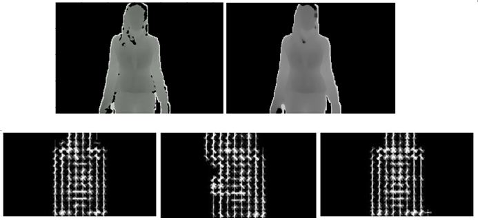
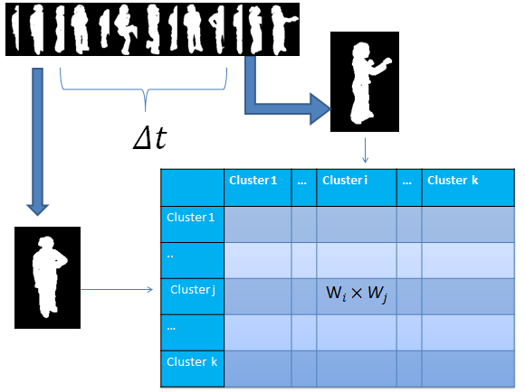
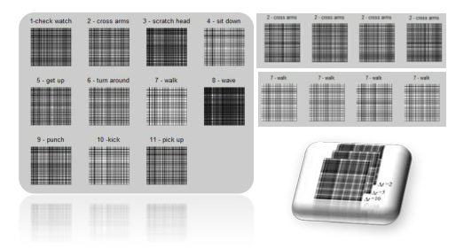

Deep Dynamic Neural Networks for Multimodal Gesture Segmentation and Recognition
This paper describes a novel method called Deep Dynamic Neural Networks (DDNN) for multimodal gesture recognition.
A semi-supervised hierarchical dynamic framework based on a Hidden Markov Model (HMM) is proposed for simultaneous gesture
segmentation and recognition where skeleton joint information, depth and RGB images, are the multimodal input observations. Unlike
most traditional approaches that rely on the construction of complex handcrafted features, our approach learns high-level
spatio-temporal representations using deep neural networks suited to the input modality: a Gaussian-Bernouilli Deep Belief Network
(DBN) to handle skeletal dynamics, and a 3D Convolutional Neural Network (3DCNN) to manage and fuse batches of depth and RGB
images. This is achieved through the modeling and learning of the emission probabilities of the HMM required to infer the gesture
sequence. This purely data driven approach achieves a Jaccard index score of 0.81 in the ChaLearn LAP gesture spotting challenge.
The performance is on par with a variety of state-of-the-art hand-tuned feature-based approaches and other learning-based methods,
therefore opening the door to the use of deep learning techniques in order to further explore multimodal time series data.

EUMSSI team at the MediaEval Person Discovery Challenge
We present the results of the EUMSSI team's participation in the Multimodal Person Discovery task
at the MediaEval challenge 2015. Our system ranks the first amongst other 9 international research teams.
The goal is to identify all people who simultaneously appear
and speak in a video corpus, which implicitly involves both audio stream and visual stream.
We emphasize on improving each modality separately and benchmarking them to analyze their pros and cons.

Deep Dynamic Neural Networks for Gesture Segmentation and Recognition
The purpose of this paper is to describe a novel Deep Dynamic Neural Networks(DDNN) for the track 3 of the Chalearn Looking at People 2014 challenge.
A generalised semi-supervised hierarchical dynamic framework is proposed for simultaneous gesture segmentation and recognition taking both skeleton and depth images as input modules.
First, Deep Belief Networks(DBN) and 3D Convolutional Neural Networks (3DCNN) are adopted for skeletal and depth module accordingly to extract high level spatio-temporal features.
Then the learned representations are used for estimating emission probabilities of the Hidden Markov Models to infer action sequence.
The framework can be easily extended by including an ergodic state to segment and recognise video sequence in a frame-to-frame mechanism,
rendering it possible for online segmentation and recognition for diverse input modules.
Some normalisation details pertaining to preprocessing raw features are also discussed.
This purely data-driven approach achieves 0.8162 score in this gesture spotting challenge.
The performance is on par with a variety of the state-of-the-art hand-tuned-feature approaches and other learning-based methods,
opening the doors for using deep learning techniques to explore time series multimodal data.

Multimodal Dynamic Networks for Gesture Recognition
Multimodal input is a real-world situation in gesture recognition applications such as sign language recognition.
In this paper, we propose a novel bi-modal (audio and skeleton joints) dynamic network for gesture recognition.
First, state-of-the-art dynamic Deep Belief Networks are deployed to extract high level audio and skeletal joints representations.
Then, instead of traditional late fusion, we adopt another layer of perceptron for cross modality learning taking the input from each individual net's penultimate layer.
Finally, to account for temporal dynamics, the learned shared representations are used for estimating the emission probability to infer action sequences.
In particular, we demonstrate that multimodal feature learning will extract semantically meaningful shared representations, outperforming individual modalities,
and the early fusion scheme's efficacy against the traditional method of late fusion.

Leveraging Hierarchical Parametric Network for Skeletal Joints Action Segmentation and Recognition
Over the last few years, with the immense popularity of the Kinect, there has been renewed interest in developing methods for human gesture and action recognition from
3D skeletal data. A number of approaches have been proposed to extract representative features from 3D skeletal data, most commonly hard wired geometric or bio-inspired
shape context features. We propose a hierarchial dynamic framework that first extracts high level skeletal joints features and then uses the learned
representation for estimating emission probability to infer action sequence. Currently gaussian mixture models are the dominant technique for
modeling the emission distribution of hidden Markov models. We show that better action recognition using skeletal features can be achieved by replacing gaussian mixture
models by deep neural networks that contain many layers of features to predict probability distributions over states of hidden Markov models.
The framework can be easily extended to include a ergodic state to segment and recognize actions simultaneously.

Learning Deep and Wide: A Spectral Method for Learning Deep Networks
Building intelligent systems that are capable of extracting high-level representations from high-dimensional sensory
data lies at the core of solving many computer vision related
tasks. We propose the Multi-Spectral Neural Networks (MSNN)
to learn features from multi-column Deep Neural Networks and
embed the penultimate hierarchical discriminative manifolds into
a compact representation. The low dimensional embedding explores the complementary property of different views wherein the
distribution of each view is sufficiently smooth and hence achieves
robustness given few labeled training data. Our experiments
show that spectrally embedding several deep neural networks can
explore the optimum output from the multi-column networks and
consistently decrease the error rate compared to a single deep
network.

Multi-Max-Margin Support Vector Machine for Multi-Source Human Action Recognition
We propose a new ensemble-based classifier for multi-source human action
recognition called Multi-Max-Margin Support Vector Machine (MMM-SVM).
This ensemble method incorporates the decision values of multiple sources
and makes an informed final prediction by merging multi-source feature’s intrinsic
decision strength. Experiments performed on the benchmark IXMAS
multi-view dataset demonstrate that the performance of our multiview
system can further improve the accuracy over single view by 3%-13% and
consistently outperform the direct-concatenation method. We further apply
this ensemble technique for combining the decision values of contextual and
motion information in the UCF Sports dataset and the results are comparable
to the state-of-the-art, which exhibits our algorithm’s potential for
further extension in other areas of feature fusion problems.

One Shot Learning Gesture Recognition with Kinect Sensor
Gestures are both natural and intuitive for Human-Computer-Interaction
(HCI) and the one-shot learning scenario is one
of the real world situations in terms of gesture recognition
problems. In this demo, we present a hand gesture recognition
system using the Kinect sensor, which addresses the
problem of one-shot learning gesture recognition with a user
defined training and testing system.
Such a system can behave like a remote control where the user
can allocate a specific function using a prefered gesture by performing
it only once. To adopt the gesture recognition framework,
the system first automatically segments an action sequence
into atomic tokens, and then adopts the Extended-Motion-History-Image
(Extended-MHI) for motion feature representation.
We evaluate the performance of our system quantitatively in
Chalearn Gesture Challenge, and apply it to
a virtual one shot learning gesture recognition system.

One shot learning gesture recognition from RGBD images
We present a system to classify the gesture from only one
learning example. The inputs are duo-modality, i.e. RGB
and depth sensor from Kinect. Our system performs morphological
denoising on depth images and automatically
segments the temporal boundaries. Features are extracted
based on Extended-Motion-History-Image(Extended-MHI)
and the Multi-view Spectral Embedding (MSE) algorithm is
used to fuse duo modalities in a physically meaningful manner.
Our approach achieves less than 0.3 in Levenshtein distance in
CHALEARN Gesture Challenge validation batches.

Silhouette Analysis Based Action Recognition via Exploiting Human Poses
In this paper, we propose a novel scheme for human
action recognition that combines the advantages of both local and
global representations. We explore human silhouettes for human
action representation by taking into account the correlation
between sequential poses in an action. A modified bag-of-words
model, named bag-of-correlated-poses (BoCP), is introduced to
encode temporally local features of actions. To utilize the property
of visual word ambiguity, we adopt the soft assignment strategy
to reduce the dimensionality of our model and circumvent the
penalty of computational complexity and quantization error. To
compensate for the loss of structural information, we propose an
extended motion template, i.e., extensions of the motion history
image (extended-MHI) to capture the holistic structural features.
The proposed scheme takes advantages of local and global
features and therefore provides a discriminative representation
for human actions. Experimental results prove the viability of the
complimentary properties of two descriptors and the proposed
approach outperforms the state-of-the-art methods on the IXMAS
action recognition dataset.

Action Recognition using Correlogram of Body Poses and Spectral Regression
Human action recognition is an important topic in computer vision
with its applications range from robotics, video surveillance,
human-computer interaction, user interface design, multi-media
video retrieval and among others. This paper proposed a novel
representation for human action using Correlogram of Body Poses
(CBP) which is a descendant of our previous work on Histogram of
Body Poses (HBP). In addition, the paper explores a recently
proposed subspace learning method called Spectral Regression
Discriminant Analysis (SRDA) which aims to speed up the
traditional subspace learning methods. Results show that this new
representation of human action achieves a rather satisfactory rate
and be compared to most state-of-art methods.